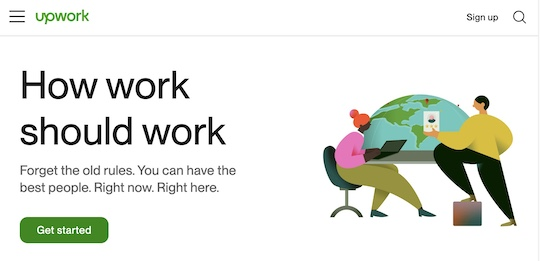

I worked for 40 years as an independent contractor in the field of computer technology. Some of the tasks I performed:
In September, 2019, my career was ended when the Democrats enacted into law Assembly Bill (AB) 5. So, I have gone back to school to learn new skills that will allow me to continue working in the "Gig Economy". My emphasis has been Cybersecurity and Full Stack Web Development.
My plan for the future is to return to work as an independent contractor in the "Gig Economy." In order to do that I first need to put together a portfolio that showcases my skills. When I am ready to deal with the public I plan to advertise my skills at places like "upwork"
